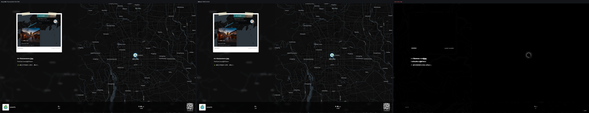
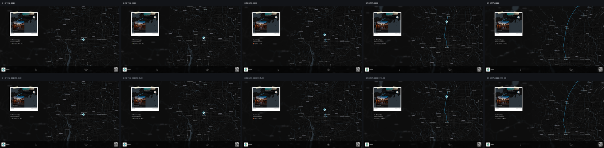
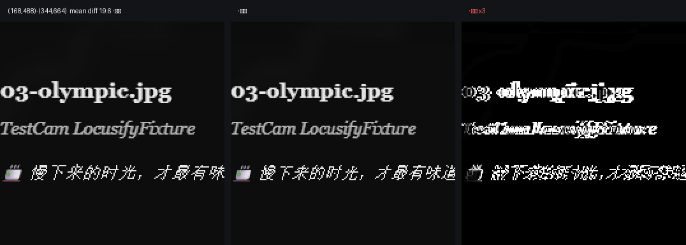
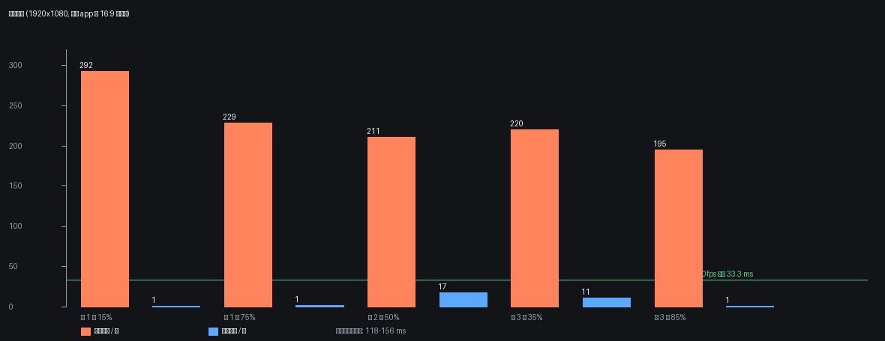

真实 dev server · 真实上传 4 张 GPS 照片 · 真实轨迹回放 · 抓取 16:9 cropRef · Chrome 155 · 1920×1080@30fps
replayStore 回放。下文所有 PSNR/SSIM 都是「离线合成像素」对「你的 app 此刻真实渲染的像素」。
drawImage + 画布内 blur 造玻璃 + 静态层缓存 + 文字补丁）每帧 0.7–16.8 ms，静态层 118–157 ms 只做一次。| 项目 | 说明 |
|---|---|
| 被测页面 | packages/app 真实 dev server（vite --port 1070），/zh-CN/ 地图页 |
| 真实交互 | 侧栏「上传照片」→ 上传 packages/app/e2e/fixtures 中 4 张带 EXIF GPS 的真实照片（天安门 / 鼓楼 / 奥林匹克 / 慕田峪）→ 真实 route-create → 4 个 marker |
| 真实回放 | 侧栏「查看轨迹」→ 真实 prepareReplay() 生成 3 段路径 → 真实 replayStore |
| 唯一 mock | /api/v1/{auth/me,profile,subscriptions} 三个鉴权响应（与仓库自带 e2e 一致），不参与画面 |
| 抓取目标 | app 自己录屏用的 16:9 容器（MapSection.tsx 的 cropRef），运行时实测 1920×1080 @ (0,0) |
| 参考图 | Playwright 对该容器直接截图 = 浏览器真实渲染 |
| 冻结方式 | 仅停住回放时钟（_tick 置空 + 指定 segmentProgress）并打开 recordingActive（即导出时的界面）；未改任何样式/组件 |
| 现状：屏幕捕获 | 离线整帧光栅 | 离线分层合成（推荐） | |
|---|---|---|---|
| 实现 | getDisplayMedia + CropTarget.cropTo + MediaRecorder | 每帧把整个 16:9 容器交给 html-to-image | 地图 drawImage + 画布 blur 造玻璃 + 静态层缓存 + 文字补丁 |
| 与实时差异 | 0（就是屏幕） | 32.4 dB / 0.995 | 32.3 dB / 0.995 |
| 每帧成本 | 0（编码器实时吞帧） | 195–292 ms → 3–5 fps | 0.7–16.8 ms |
| 10 s 片子总耗时 | ≈10 s | ≈60 s+ | ≈130 ms×N + 8.5 s |
| 需要授权 | 需要选窗口/屏幕 | 不需要 | 不需要 |
| 受窗口尺寸/遮挡影响 | 会 | 不会 | 不会 |
| 可自动化 / 可重跑 | 难 | 可以 | 可以 |
玻璃 backdrop-blur | 原生正确 | 丢失，需手工补 | 手工补，实测一致 |


| 状态 | 路线 | PSNR (dB) | SSIM | 平均通道差 | >40 像素占比 |
|---|---|---|---|---|---|
| 第 1 段 15% | 整帧光栅 | 32.47 | 0.9958 | 0.28 | 0.15% |
| 第 1 段 15% | 分层合成 | 32.43 | 0.9952 | 0.31 | 0.15% |
| 第 1 段 75% | 整帧光栅 | 32.44 | 0.9955 | 0.29 | 0.15% |
| 第 1 段 75% | 分层合成 | 32.43 | 0.9950 | 0.32 | 0.15% |
| 第 2 段 50% | 整帧光栅 | 32.60 | 0.9958 | 0.27 | 0.14% |
| 第 2 段 50% | 分层合成 | 32.39 | 0.9953 | 0.31 | 0.15% |
| 第 3 段 35% | 整帧光栅 | 32.37 | 0.9955 | 0.30 | 0.15% |
| 第 3 段 35% | 分层合成 | 32.18 | 0.9948 | 0.33 | 0.16% |
| 第 3 段 85% | 整帧光栅 | 32.32 | 0.9957 | 0.29 | 0.15% |
| 第 3 段 85% | 分层合成 | 32.31 | 0.9952 | 0.31 | 0.15% |
| 编码回环（第 45 帧，解码 MP4 vs 送编码器那一帧） | WebCodecs H.264 | 45.08 | 0.9956 | 0.55 | 0.00% |
把差值按 32×32 分块聚类，全画面只有 1 个区域平均差 >12：(192,512)–(320,640)，128×128，平均 19.6、最大 218。放大看就是一小段文字的字形相位/抗锯齿差异——同一字体同一字号，但 SVG foreignObject 内的文字光栅化相位与页面不同。地图瓦片、玻璃卡、照片缩略图、路线、底栏、二维码都在 0.1% 以内。

| 项目 | 实测 |
|---|---|
| 整帧光栅 / 帧 | 195 / 210.9 / 220.2 / 228.7 / 292.2 ms（5 个状态） |
| 静态层栅格化（一次） | 117.7 – 156.5 ms |
| 分层合成 / 帧 | 0.7 / 0.8 / 1.0 / 11.1 / 16.8 ms（有 1 个文字补丁时 11–17 ms） |
地图 drawImage / 帧 | 0.1 – 0.3 ms |
| 玻璃 blur / 帧 | 0.2 – 0.5 ms（该状态命中 2 个 backdrop-filter 元素） |
| WebCodecs 编码 90 帧 1080p30 | 2.44 s（36.9 fps 墙钟，1.23× 实时），6.2 MB，avc1.640028 @ 16 Mbps |
| 合成（分层）/ 帧，编码期间 | p50 0.3 ms / p95 0.5 ms / max 13.3 ms |

| 编码器 | 300 帧 1080p30 | 相对实时 | 产物 | 备注 |
|---|---|---|---|---|
| WebCodecs H.264 + mediabunny MP4 | 7.4 s | 1.35× | 12.6 MB | 无额外依赖，主选；真实 app 复测 1.23× / 6.2 MB（90 帧） |
| MediaRecorder VP9/WebM | 10.0 s | 1.00× | 10.1 MB | 现状兜底，被实时约束 |
| ffmpeg.wasm libx264 | 34.4 s | 0.29× | 1.6 MB | 核 31 MB，GPL-2.0-or-later |
@ffmpeg/core@0.12.10 单线程核 31 MB（ffmpeg-core.js + ffmpeg-core.wasm），好处是不需要 COOP/COEP、不需要 SharedArrayBuffer；许可证 GPL-2.0-or-later，Web 分发要满足 GPL 的独立可替换与源码声明义务。它唯一优势是产物小、老浏览器兼容。
foreignObject 里 backdrop-filter 没有背面可采样，要把地图先画进画布、再对该区域 ctx.filter = 'blur(Npx)' 自绘。textContent 变化的最小元素），11–17 ms/帧，仍在 33 ms 预算内。# 1) 起真实 app
cd packages/app && npx vite --port 1070 --strictPort
# 2) 真实 app 的导出基准（约 3 分钟）
cd tools/export-bench/real && node run-real.mjs
# 3) 只重算指标与四张图（不启浏览器）
python tools/export-bench/real/figures-real.py产物在 shots/real/（截图 + clip-webcodecs.mp4 + metrics.json，gitignored），数据副本在 reports/export-bench/metrics-real.json 与 fidelity-real.json。